秋茂園1/苗栗県
秋茂園1/苗栗県
今回の台湾修行、最初の目的地は秋茂園という妖しいコンクリ庭園からスタートさせていただく。
とある台湾通の方からお話を伺い、是非行ってみたいと思っていたので空港から直行したのである。
美味しそうなものは最初に手をつけるタイプですから…。
台湾の玄関口、桃園国際空港からバス、新幹線、在来線、ローカル線を乗り継いできたのは新竹市と台中市の間にある海沿いのウルトラ辺鄙なところ。
新埔という駅である。
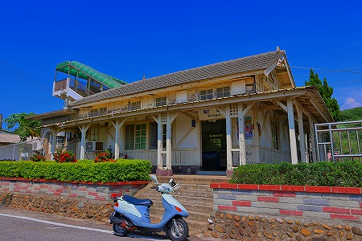
びっくりするぐらい古い駅舎である。
秋茂園の前にここの駅舎を紹介させていただきたい。
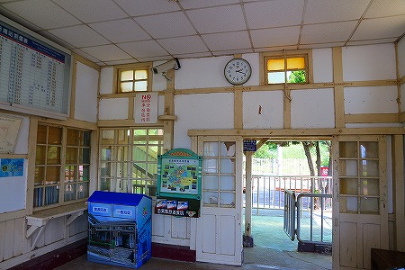
大正時代、いわゆる日本統治時代に建てられた駅舎だ。
台湾の国鉄に相当する台鉄は基本的なインフラ整備が日本統治時代に行われたため、今でも日本の国鉄時代の雰囲気を色濃く残している。
駅名の表示や車両の感じ（韓国製の車両が多いが）、ちょっとした路線図や時刻表のデザイン……。何だか乗車しているだけで無性に懐かしい気分になるのだ。
時間も正確だし、何と日本の台鉄ファンによる日式（日本風）時刻表まで出ているのだ。
コレを片手に旅をしていると行ったことのない日本の地方を旅しているような不思議な気分になってくる。
ついでにもうひとつ台湾の素晴らしいところ。
台湾ではwifi環境が充実しており、空港で申し込むと簡単に外国人観光客向けの無料アカウントがもらる。
特に台鉄全駅においてアクセス可能で、こんな超ローカル線の秘境級の駅でもwifiがビンビン繋がる。
おかげで電車待ちの間、次に行く場所を調べたりして退屈しませんでした。
…と、一通り台鉄事情を説明したので秋茂園に向かいましょう。
駅から秋茂園へは歩いて５分ほど。途中にこんな台鉄人形がいて道案内をしてくれてます。
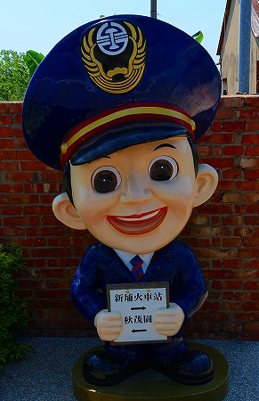
そうこうしているうちに見えてきましたよ。妖しげなコンクリ像が！
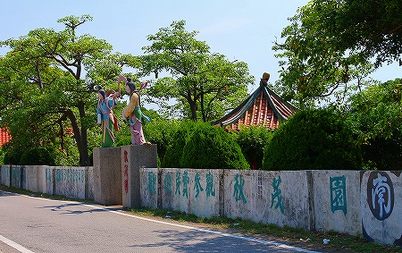
ちなみにこの日は真夏の昼下がり。気絶しそうな猛暑。
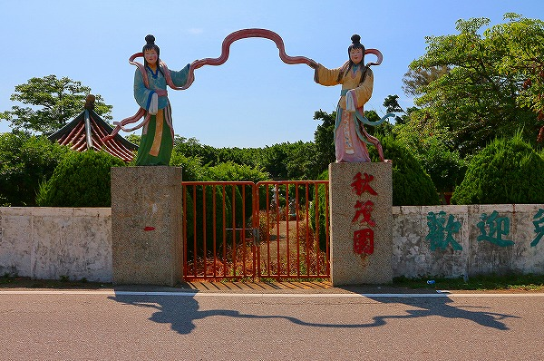
門が閉まっていたので一瞬ビビッたが、正門は先にあるみたい。
壁のかすれた文字、色あせた天女の彫像、そして閉まった門の向こうに見えるうらぶれた光景……どこをとっても現役の施設とは思えない終末感が漂っていた。
とはいえ門の向こうに見える園内の光景は並みの公園ではない。
まさに私の趣向に弩アジャスト！うっとりするようなコンクリ庭園が広がっているではないか！
さしずめ台湾版タイガーバームガーデンと呼んでも差し支えないだろう。
正門までの路傍に早くもコンクリ像がお出迎え。
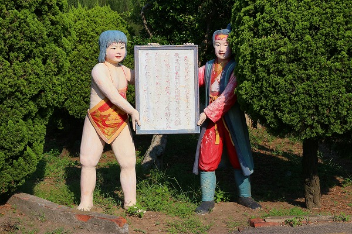
いきなり金太郎と桃太郎のツープラトン！
何故に台湾の片田舎に日本の昔話のキャラが？と不思議に思われるだろうが、その謎は追々明かされる事になろう。
他にもまだ園外なのに様々な彫像が。
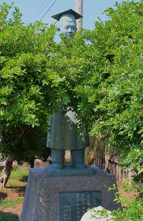自刻像？ 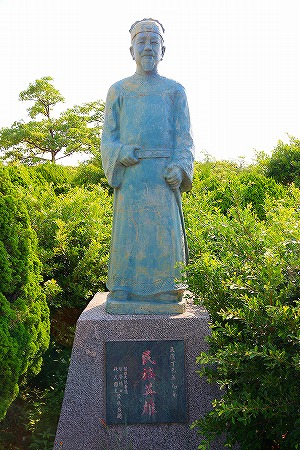孫文
用途というか設置の目的がイマイチ見えないお方もちらほら。
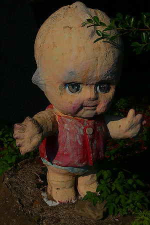 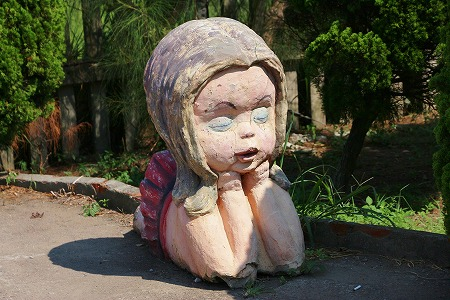
ハードボイルド風キューピーちゃんとか一体何をどうしたらいいんでしょう…。
道路から一段下がった場所に隠れるように立つ人達もいて油断ならない。
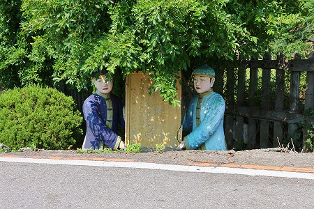
メッセージを掲げていたが何が書かれているのかは判別できなかった。
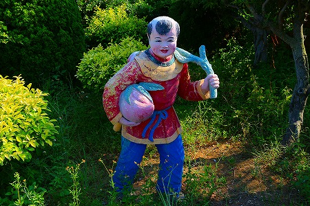
この大きな桃を持った人は誰なのだろう。他でも見たことあるけど。
そんなこんなで正門に到着。
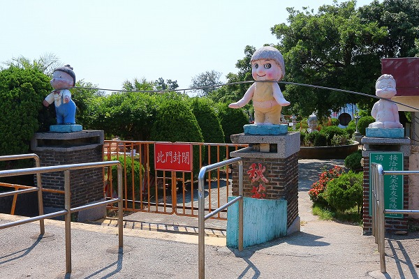
ここも脇のゲートしか開いてない…。
正門脇の説明書き。黄秋茂博士なる人物が私費で作った無料の公園との事だ。
旅日華僑とは日本にいた華僑ということか。
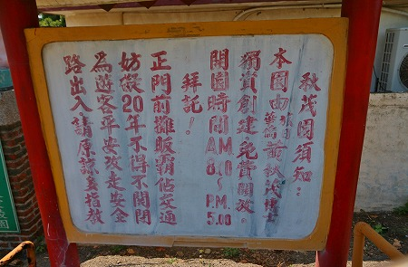
後半は門前に屋台が出て交通の妨げになっているから門が開けられない、的な事が書いてあるんだと思うんですけど…イマイチ自信ありません。
…というわけで脇の門から中に入ろう。
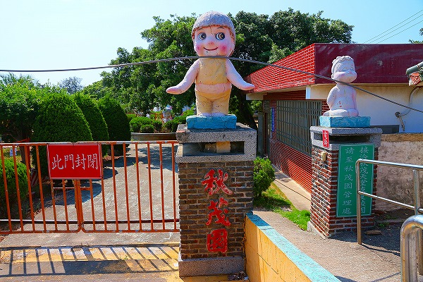
園内に入って５秒後、衝撃の事実が発覚！
何と改装工事をやっていて、敷地の右半分が立ち入り禁止に！
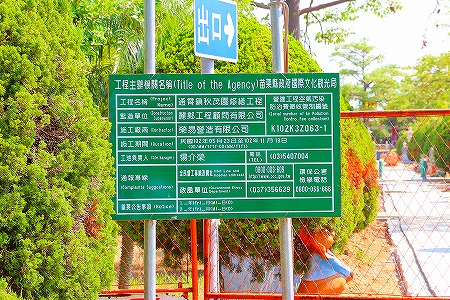
あああああああああ、もう！
ただ、嫌な予見はなくはなかった。
私が訪問を決意した少し後、我が珍スポ師匠、都築響一大兄がこの秋茂園を訪問しており、メルマガにて報告されていたのだが、その中で改修計画が進行中というハナシがあったのだ。
まさか工事が始まっていたとは！
自分の腰の重さを呪いつつ、残された秋茂園の雄姿を眼に焼き付けるべく園内を廻ってみよう。
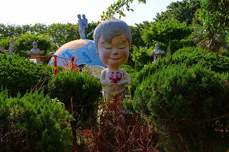
最初に目に付いたのは園内のあちこちにあったごみ箱。
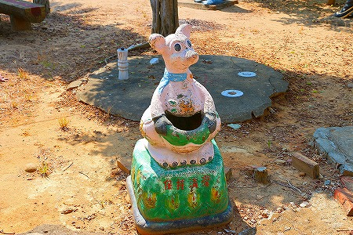
すっぽ抜けのカーブのような素晴らしきペーソス。リニューアル後には粛清されてしまうかもしれないのであえてここに上げておく。
尿道太めの小便小僧。水が遠慮なしにドバドバと。
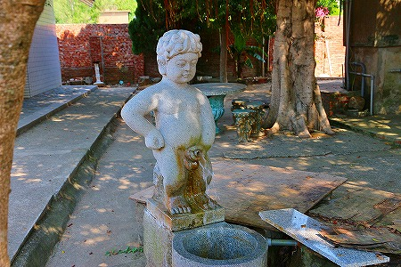
あまりにも暑かったので顔を洗ってやりましたわ。えっへん。
園内にはお堂や廟や東屋などが点在しているがそれとは別に色々なコンクリ動物が点在している。
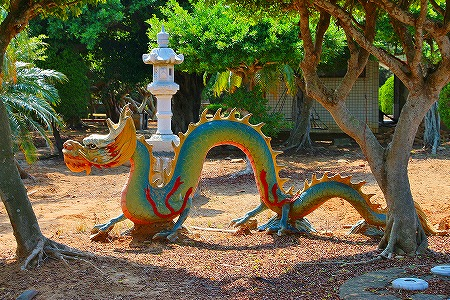
龍とか
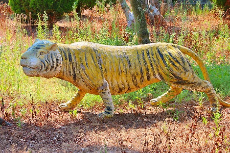
虎とか
敷地の奥に物凄く気になる物件がチラリと見えるが、とりあえず後で。
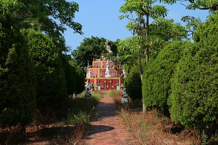
好きなものは後にとっておきたいタイプなもんで。
園内の一画にあった観音堂。
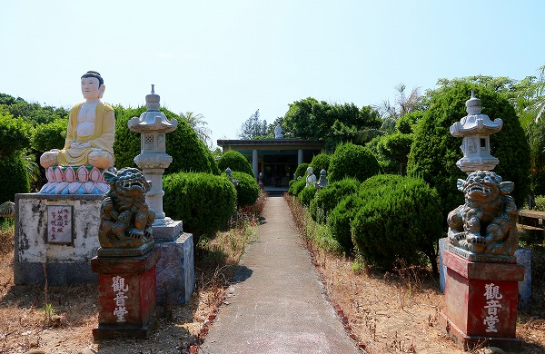
路傍には手の椅子があった。
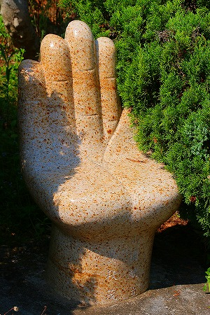
観音堂の中には味わい深い男女のコンクリの像。
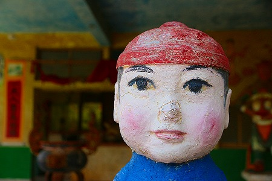
浅いひび割れや色あせ、コンクリ彫像にわびさびを求めるのは野暮だが、それでもこういう良い塩梅の煤けたコンクリ像を見ると思わず見入ってしまう。
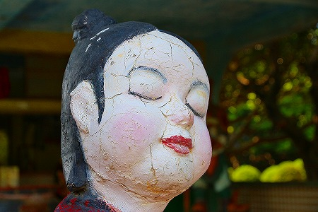
海に近いこの場所では金属の腐食も激しい。
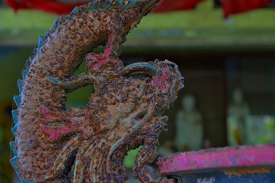
ましてやメンテがあまりなされていないこの場所では香炉の飾りの龍もこんな感じに埃と錆と蜘蛛の巣まみれになってしまうのだ
いかにも中華風の四天王像。後ろの壁のイラストが素敵ですね。
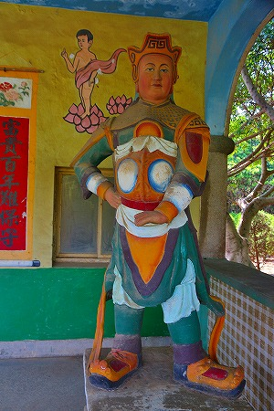
関羽、だろうか？
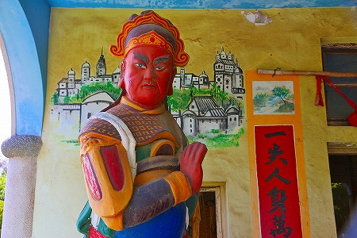
壁のイラストが素敵だ。観音サマの後ろの蓮の花なんか今にも動き出して象さんに襲いかかりそうな邪悪感が出てませんか？
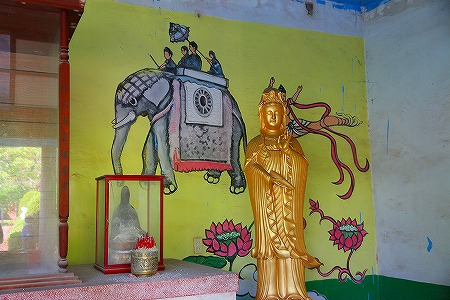
そんなこんなで先ほどチラッと見えた仏塔三段ケーキ。
さしずめ秋茂園のシンデレラ城と言っておこう。
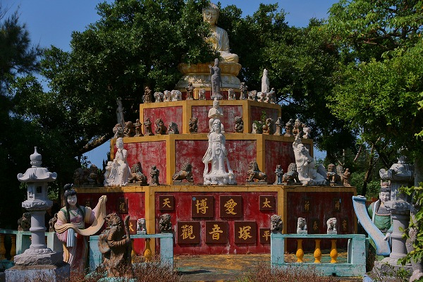
色といい、形状といい、あまりのかっこ良さにしばらくうっとりとしちゃいましたよ。
博愛観音塚とある。
大仏を頂点とした六角形のひな壇には仏像とそれ以上の数の狛犬が並んでいた。
台座には「愛国愛郷 飲水思源」とあった。
井戸の水を飲む者はその井戸を掘った者の苦労を知れ、の意味。
観音塚の前に立つ天女。
色彩、表情などに日本では見られない汎中華世界に通低する独特の造形感覚が伺える。
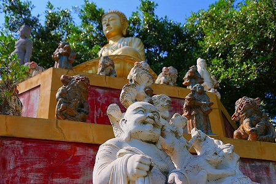
須弥山を思わせるそのオールスター具合に入園後数十分ですでにお腹が一杯になってきたぞ…。
まだまだ見どころは尽きないので続きは後半戦で。
後半戦へＧＯ！
台湾大佛列伝4
珍寺大道場 HOME